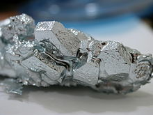

Gallium
|  | |||||||||||||||||||||||||||||||||||||||||||||||||||||||||||||||||||||||||||||||||||||||||||||||||||||||||||||||||||||||||||||||||||||||||||||||||||||||||||||||||||||||||||||||||||||||||||||||||||||||||||||||||||||||||||||||||||||
| General properties | |||||||||||||||||||||||||||||||||||||||||||||||||||||||||||||||||||||||||||||||||||||||||||||||||||||||||||||||||||||||||||||||||||||||||||||||||||||||||||||||||||||||||||||||||||||||||||||||||||||||||||||||||||||||||||||||||||||
|---|---|---|---|---|---|---|---|---|---|---|---|---|---|---|---|---|---|---|---|---|---|---|---|---|---|---|---|---|---|---|---|---|---|---|---|---|---|---|---|---|---|---|---|---|---|---|---|---|---|---|---|---|---|---|---|---|---|---|---|---|---|---|---|---|---|---|---|---|---|---|---|---|---|---|---|---|---|---|---|---|---|---|---|---|---|---|---|---|---|---|---|---|---|---|---|---|---|---|---|---|---|---|---|---|---|---|---|---|---|---|---|---|---|---|---|---|---|---|---|---|---|---|---|---|---|---|---|---|---|---|---|---|---|---|---|---|---|---|---|---|---|---|---|---|---|---|---|---|---|---|---|---|---|---|---|---|---|---|---|---|---|---|---|---|---|---|---|---|---|---|---|---|---|---|---|---|---|---|---|---|---|---|---|---|---|---|---|---|---|---|---|---|---|---|---|---|---|---|---|---|---|---|---|---|---|---|---|---|---|---|---|---|---|---|---|---|---|---|---|---|---|---|---|---|---|---|---|---|---|
| Name, symbol | gallium, Ga | ||||||||||||||||||||||||||||||||||||||||||||||||||||||||||||||||||||||||||||||||||||||||||||||||||||||||||||||||||||||||||||||||||||||||||||||||||||||||||||||||||||||||||||||||||||||||||||||||||||||||||||||||||||||||||||||||||||
| Pronunciation | /ˈɡæliəm/ GAL-ee-əm |
||||||||||||||||||||||||||||||||||||||||||||||||||||||||||||||||||||||||||||||||||||||||||||||||||||||||||||||||||||||||||||||||||||||||||||||||||||||||||||||||||||||||||||||||||||||||||||||||||||||||||||||||||||||||||||||||||||
| Appearance | silver-white | ||||||||||||||||||||||||||||||||||||||||||||||||||||||||||||||||||||||||||||||||||||||||||||||||||||||||||||||||||||||||||||||||||||||||||||||||||||||||||||||||||||||||||||||||||||||||||||||||||||||||||||||||||||||||||||||||||||
| Gallium in the periodic table | |||||||||||||||||||||||||||||||||||||||||||||||||||||||||||||||||||||||||||||||||||||||||||||||||||||||||||||||||||||||||||||||||||||||||||||||||||||||||||||||||||||||||||||||||||||||||||||||||||||||||||||||||||||||||||||||||||||
|
|||||||||||||||||||||||||||||||||||||||||||||||||||||||||||||||||||||||||||||||||||||||||||||||||||||||||||||||||||||||||||||||||||||||||||||||||||||||||||||||||||||||||||||||||||||||||||||||||||||||||||||||||||||||||||||||||||||
| Atomic number | 31 | ||||||||||||||||||||||||||||||||||||||||||||||||||||||||||||||||||||||||||||||||||||||||||||||||||||||||||||||||||||||||||||||||||||||||||||||||||||||||||||||||||||||||||||||||||||||||||||||||||||||||||||||||||||||||||||||||||||
| Standard atomic weight (±) | 69.723(1)[1] | ||||||||||||||||||||||||||||||||||||||||||||||||||||||||||||||||||||||||||||||||||||||||||||||||||||||||||||||||||||||||||||||||||||||||||||||||||||||||||||||||||||||||||||||||||||||||||||||||||||||||||||||||||||||||||||||||||||
| Element category | post-transition metal | ||||||||||||||||||||||||||||||||||||||||||||||||||||||||||||||||||||||||||||||||||||||||||||||||||||||||||||||||||||||||||||||||||||||||||||||||||||||||||||||||||||||||||||||||||||||||||||||||||||||||||||||||||||||||||||||||||||
| Group, block | group 13, p-block | ||||||||||||||||||||||||||||||||||||||||||||||||||||||||||||||||||||||||||||||||||||||||||||||||||||||||||||||||||||||||||||||||||||||||||||||||||||||||||||||||||||||||||||||||||||||||||||||||||||||||||||||||||||||||||||||||||||
| Period | period 4 | ||||||||||||||||||||||||||||||||||||||||||||||||||||||||||||||||||||||||||||||||||||||||||||||||||||||||||||||||||||||||||||||||||||||||||||||||||||||||||||||||||||||||||||||||||||||||||||||||||||||||||||||||||||||||||||||||||||
| Electron configuration | [Ar] 3d10 4s2 4p1 | ||||||||||||||||||||||||||||||||||||||||||||||||||||||||||||||||||||||||||||||||||||||||||||||||||||||||||||||||||||||||||||||||||||||||||||||||||||||||||||||||||||||||||||||||||||||||||||||||||||||||||||||||||||||||||||||||||||
| per shell | 2, 8, 18, 3 | ||||||||||||||||||||||||||||||||||||||||||||||||||||||||||||||||||||||||||||||||||||||||||||||||||||||||||||||||||||||||||||||||||||||||||||||||||||||||||||||||||||||||||||||||||||||||||||||||||||||||||||||||||||||||||||||||||||
| Physical properties | |||||||||||||||||||||||||||||||||||||||||||||||||||||||||||||||||||||||||||||||||||||||||||||||||||||||||||||||||||||||||||||||||||||||||||||||||||||||||||||||||||||||||||||||||||||||||||||||||||||||||||||||||||||||||||||||||||||
| Phase | solid | ||||||||||||||||||||||||||||||||||||||||||||||||||||||||||||||||||||||||||||||||||||||||||||||||||||||||||||||||||||||||||||||||||||||||||||||||||||||||||||||||||||||||||||||||||||||||||||||||||||||||||||||||||||||||||||||||||||
| Melting point | 302.9146 K (29.7646 °C, 85.5763 °F) | ||||||||||||||||||||||||||||||||||||||||||||||||||||||||||||||||||||||||||||||||||||||||||||||||||||||||||||||||||||||||||||||||||||||||||||||||||||||||||||||||||||||||||||||||||||||||||||||||||||||||||||||||||||||||||||||||||||
| Boiling point | 2673 K (2400 °C, 4352 °F)[2] | ||||||||||||||||||||||||||||||||||||||||||||||||||||||||||||||||||||||||||||||||||||||||||||||||||||||||||||||||||||||||||||||||||||||||||||||||||||||||||||||||||||||||||||||||||||||||||||||||||||||||||||||||||||||||||||||||||||
| Density near r.t. | 5.91 g·cm−3 | ||||||||||||||||||||||||||||||||||||||||||||||||||||||||||||||||||||||||||||||||||||||||||||||||||||||||||||||||||||||||||||||||||||||||||||||||||||||||||||||||||||||||||||||||||||||||||||||||||||||||||||||||||||||||||||||||||||
| when liquid, at m.p. | 6.095 g·cm−3 | ||||||||||||||||||||||||||||||||||||||||||||||||||||||||||||||||||||||||||||||||||||||||||||||||||||||||||||||||||||||||||||||||||||||||||||||||||||||||||||||||||||||||||||||||||||||||||||||||||||||||||||||||||||||||||||||||||||
| Heat of fusion | 5.59 kJ·mol−1 | ||||||||||||||||||||||||||||||||||||||||||||||||||||||||||||||||||||||||||||||||||||||||||||||||||||||||||||||||||||||||||||||||||||||||||||||||||||||||||||||||||||||||||||||||||||||||||||||||||||||||||||||||||||||||||||||||||||
| Heat of vaporization | 256 kJ·mol−1[2] | ||||||||||||||||||||||||||||||||||||||||||||||||||||||||||||||||||||||||||||||||||||||||||||||||||||||||||||||||||||||||||||||||||||||||||||||||||||||||||||||||||||||||||||||||||||||||||||||||||||||||||||||||||||||||||||||||||||
| Molar heat capacity | 25.86 J·mol−1·K−1 | ||||||||||||||||||||||||||||||||||||||||||||||||||||||||||||||||||||||||||||||||||||||||||||||||||||||||||||||||||||||||||||||||||||||||||||||||||||||||||||||||||||||||||||||||||||||||||||||||||||||||||||||||||||||||||||||||||||
vapor pressure
|
|||||||||||||||||||||||||||||||||||||||||||||||||||||||||||||||||||||||||||||||||||||||||||||||||||||||||||||||||||||||||||||||||||||||||||||||||||||||||||||||||||||||||||||||||||||||||||||||||||||||||||||||||||||||||||||||||||||
| Atomic properties | |||||||||||||||||||||||||||||||||||||||||||||||||||||||||||||||||||||||||||||||||||||||||||||||||||||||||||||||||||||||||||||||||||||||||||||||||||||||||||||||||||||||||||||||||||||||||||||||||||||||||||||||||||||||||||||||||||||
| Oxidation states | 3, 2, 1, −2, −4, −5[3] (an amphoteric oxide) | ||||||||||||||||||||||||||||||||||||||||||||||||||||||||||||||||||||||||||||||||||||||||||||||||||||||||||||||||||||||||||||||||||||||||||||||||||||||||||||||||||||||||||||||||||||||||||||||||||||||||||||||||||||||||||||||||||||
| Electronegativity | Pauling scale: 1.81 | ||||||||||||||||||||||||||||||||||||||||||||||||||||||||||||||||||||||||||||||||||||||||||||||||||||||||||||||||||||||||||||||||||||||||||||||||||||||||||||||||||||||||||||||||||||||||||||||||||||||||||||||||||||||||||||||||||||
| Ionization energies | 1st: 578.8 kJ·mol−1 2nd: 1979.3 kJ·mol−1 3rd: 2963 kJ·mol−1 (more) |
||||||||||||||||||||||||||||||||||||||||||||||||||||||||||||||||||||||||||||||||||||||||||||||||||||||||||||||||||||||||||||||||||||||||||||||||||||||||||||||||||||||||||||||||||||||||||||||||||||||||||||||||||||||||||||||||||||
| Atomic radius | empirical: 135 pm | ||||||||||||||||||||||||||||||||||||||||||||||||||||||||||||||||||||||||||||||||||||||||||||||||||||||||||||||||||||||||||||||||||||||||||||||||||||||||||||||||||||||||||||||||||||||||||||||||||||||||||||||||||||||||||||||||||||
| Covalent radius | 122±3 pm | ||||||||||||||||||||||||||||||||||||||||||||||||||||||||||||||||||||||||||||||||||||||||||||||||||||||||||||||||||||||||||||||||||||||||||||||||||||||||||||||||||||||||||||||||||||||||||||||||||||||||||||||||||||||||||||||||||||
| Van der Waals radius | 187 pm | ||||||||||||||||||||||||||||||||||||||||||||||||||||||||||||||||||||||||||||||||||||||||||||||||||||||||||||||||||||||||||||||||||||||||||||||||||||||||||||||||||||||||||||||||||||||||||||||||||||||||||||||||||||||||||||||||||||
| Miscellanea | |||||||||||||||||||||||||||||||||||||||||||||||||||||||||||||||||||||||||||||||||||||||||||||||||||||||||||||||||||||||||||||||||||||||||||||||||||||||||||||||||||||||||||||||||||||||||||||||||||||||||||||||||||||||||||||||||||||
| Crystal structure | orthorhombic
 |
||||||||||||||||||||||||||||||||||||||||||||||||||||||||||||||||||||||||||||||||||||||||||||||||||||||||||||||||||||||||||||||||||||||||||||||||||||||||||||||||||||||||||||||||||||||||||||||||||||||||||||||||||||||||||||||||||||
| Speed of sound thin rod | 2740 m·s−1 (at 20 °C) | ||||||||||||||||||||||||||||||||||||||||||||||||||||||||||||||||||||||||||||||||||||||||||||||||||||||||||||||||||||||||||||||||||||||||||||||||||||||||||||||||||||||||||||||||||||||||||||||||||||||||||||||||||||||||||||||||||||
| Thermal expansion | 18 µm·m−1·K−1 (at 25 °C) | ||||||||||||||||||||||||||||||||||||||||||||||||||||||||||||||||||||||||||||||||||||||||||||||||||||||||||||||||||||||||||||||||||||||||||||||||||||||||||||||||||||||||||||||||||||||||||||||||||||||||||||||||||||||||||||||||||||
| Thermal conductivity | 40.6 W·m−1·K−1 | ||||||||||||||||||||||||||||||||||||||||||||||||||||||||||||||||||||||||||||||||||||||||||||||||||||||||||||||||||||||||||||||||||||||||||||||||||||||||||||||||||||||||||||||||||||||||||||||||||||||||||||||||||||||||||||||||||||
| Electrical resistivity | 270 nΩ·m (at 20 °C) | ||||||||||||||||||||||||||||||||||||||||||||||||||||||||||||||||||||||||||||||||||||||||||||||||||||||||||||||||||||||||||||||||||||||||||||||||||||||||||||||||||||||||||||||||||||||||||||||||||||||||||||||||||||||||||||||||||||
| Magnetic ordering | diamagnetic | ||||||||||||||||||||||||||||||||||||||||||||||||||||||||||||||||||||||||||||||||||||||||||||||||||||||||||||||||||||||||||||||||||||||||||||||||||||||||||||||||||||||||||||||||||||||||||||||||||||||||||||||||||||||||||||||||||||
| Young's modulus | 9.8 GPa | ||||||||||||||||||||||||||||||||||||||||||||||||||||||||||||||||||||||||||||||||||||||||||||||||||||||||||||||||||||||||||||||||||||||||||||||||||||||||||||||||||||||||||||||||||||||||||||||||||||||||||||||||||||||||||||||||||||
| Poisson ratio | 0.47 | ||||||||||||||||||||||||||||||||||||||||||||||||||||||||||||||||||||||||||||||||||||||||||||||||||||||||||||||||||||||||||||||||||||||||||||||||||||||||||||||||||||||||||||||||||||||||||||||||||||||||||||||||||||||||||||||||||||
| Mohs hardness | 1.5 | ||||||||||||||||||||||||||||||||||||||||||||||||||||||||||||||||||||||||||||||||||||||||||||||||||||||||||||||||||||||||||||||||||||||||||||||||||||||||||||||||||||||||||||||||||||||||||||||||||||||||||||||||||||||||||||||||||||
| Brinell hardness | 56.8–68.7 MPa | ||||||||||||||||||||||||||||||||||||||||||||||||||||||||||||||||||||||||||||||||||||||||||||||||||||||||||||||||||||||||||||||||||||||||||||||||||||||||||||||||||||||||||||||||||||||||||||||||||||||||||||||||||||||||||||||||||||
| CAS Registry Number | 7440-55-3 | ||||||||||||||||||||||||||||||||||||||||||||||||||||||||||||||||||||||||||||||||||||||||||||||||||||||||||||||||||||||||||||||||||||||||||||||||||||||||||||||||||||||||||||||||||||||||||||||||||||||||||||||||||||||||||||||||||||
| History | |||||||||||||||||||||||||||||||||||||||||||||||||||||||||||||||||||||||||||||||||||||||||||||||||||||||||||||||||||||||||||||||||||||||||||||||||||||||||||||||||||||||||||||||||||||||||||||||||||||||||||||||||||||||||||||||||||||
| Naming | after Gallia (Latin for: France), homeland of the discoverer | ||||||||||||||||||||||||||||||||||||||||||||||||||||||||||||||||||||||||||||||||||||||||||||||||||||||||||||||||||||||||||||||||||||||||||||||||||||||||||||||||||||||||||||||||||||||||||||||||||||||||||||||||||||||||||||||||||||
| Prediction | Dmitri Mendeleev (1871) | ||||||||||||||||||||||||||||||||||||||||||||||||||||||||||||||||||||||||||||||||||||||||||||||||||||||||||||||||||||||||||||||||||||||||||||||||||||||||||||||||||||||||||||||||||||||||||||||||||||||||||||||||||||||||||||||||||||
| Discovery and first isolation | Lecoq de Boisbaudran (1875) | ||||||||||||||||||||||||||||||||||||||||||||||||||||||||||||||||||||||||||||||||||||||||||||||||||||||||||||||||||||||||||||||||||||||||||||||||||||||||||||||||||||||||||||||||||||||||||||||||||||||||||||||||||||||||||||||||||||
| Most stable isotopes | |||||||||||||||||||||||||||||||||||||||||||||||||||||||||||||||||||||||||||||||||||||||||||||||||||||||||||||||||||||||||||||||||||||||||||||||||||||||||||||||||||||||||||||||||||||||||||||||||||||||||||||||||||||||||||||||||||||
|
|||||||||||||||||||||||||||||||||||||||||||||||||||||||||||||||||||||||||||||||||||||||||||||||||||||||||||||||||||||||||||||||||||||||||||||||||||||||||||||||||||||||||||||||||||||||||||||||||||||||||||||||||||||||||||||||||||||
{kind=link}
Gallium is a chemical element with symbol Ga and atomic number 31. Elemental gallium does not occur in free form in nature, but as the gallium(III) compounds that are in trace amounts in zinc ores and in bauxite. Gallium is a soft, silvery metal, and elemental gallium is a brittle solid at low temperatures, and melts at 29.76 °C (85.57 °F) (slightly above room temperature). The melting point of gallium is used as a temperature reference point. The alloy galinstan (68.5% gallium, 21.5% indium, and 10% tin) has an even lower melting point of −19 °C (−2 °F), well below the freezing point of water. Since its discovery in 1875, gallium has been used as an agent to make alloys that melt at low temperatures. It has also been useful in semiconductors, including as a dopant.
Gallium is predominantly used in electronics. Gallium arsenide, the primary chemical compound of gallium in electronics, is used in microwave circuits, high-speed switching circuits, and infrared circuits. Semiconductive gallium nitride and indium gallium nitride produce blue and violet light-emitting diodes (LEDs) and diode lasers. Gallium is also used in the production of artificial gadolinium gallium garnet for jewelry.
Gallium has no known natural role in biology. Gallium(III) behaves in a similar manner to ferric salts in biological systems and has been used in some medical applications, including pharmaceuticals and radiopharmaceuticals. Gallium thermometers are manufactured as an eco-friendly alternative to mercury thermometers.
Contents
[hide]Physical properties[edit]
{kind=link}
Elemental gallium is not found in nature, but it is easily obtained by smelting. Very pure gallium metal has a silvery color and its solid metal fractures conchoidally like glass. Gallium metal expands by 3.1% when it solidifies, and therefore storage in either glass or metal containers is avoided, due to the possibility of container rupture with freezing. Gallium shares the higher-density liquid state with only a few materials, like water, silicon, germanium, bismuth, and plutonium.
Gallium attacks most other metals by diffusing into their metal lattice. Gallium, for example, diffuses into the grain boundaries of aluminium-zinc alloys[4] or steel,[5] making them very brittle. Gallium easily alloys with many metals, and is used in small quantities as a plutonium-gallium alloy in the plutonium cores of nuclear bombs, to help stabilize the plutonium crystal structure.[6]
The melting point of gallium, at 302.9146 K (29.7646 °C, 85.5763 °F), is just above room temperature, and is approximately the same as the average summer daytime temperatures in Earth's mid-latitudes. Gallium's melting point (mp) is one of the formal temperature reference points in the International Temperature Scale of 1990 (ITS-90) established by the BIPM.[7][8][9] The triple point of gallium, at 302.9166 K (29.7666 °C, 85.5799 °F), is being used by NIST in preference to gallium's melting point.[10]
The unique melting point of gallium allows it to melt in one's hand, and then refreeze if removed. This metal has a strong tendency to supercool below its melting point/freezing point. Seeding with a crystal helps to initiate freezing. Gallium is one of the metals (with caesium, rubidium, mercury, and likely francium) that are liquid at or near-normal room temperature, and can therefore be used in metal-in-glass high-temperature thermometers. It is also notable for having one of the largest liquid ranges for a metal, and for having (unlike mercury) a low vapor pressure at high temperatures. Gallium's boiling point, 2673 K, is more than eight times higher than its melting point on the absolute scale, making it the greatest ratio between melting point and boiling point of any element. Unlike mercury, liquid gallium metal wets glass and skin, making it mechanically more difficult to handle (even though it is substantially less toxic and requires far fewer precautions). For this reason as well as the metal contamination and freezing-expansion problems, samples of gallium metal are usually supplied in polyethylene packets within other containers.
| Property | a | b | c |
|---|---|---|---|
| α (~25 °C, µm/m) | 16 | 11 | 31 |
| ρ (29.7 °C, nΩ·m) | 543 | 174 | 81 |
| ρ (0 °C, nΩ·m) | 480 | 154 | 71.6 |
| ρ (77 K, nΩ·m) | 101 | 30.8 | 14.3 |
| ρ (4.2 K, pΩ·m) | 13.8 | 6.8 | 1.6 |
Gallium does not crystallize in any of the simple crystal structures. The stable phase under normal conditions is orthorhombic with 8 atoms in the conventional unit cell. Within a unit cell, each atom has only one nearest neighbor (at a distance of 244 pm). The remaining six unit cell neighbors are spaced 27, 30 and 39 pm farther away, and they are grouped in pairs with the same distance.[12] Many stable and metastable phases are found as function of temperature and pressure.
The bonding between the two nearest neighbors is covalent, hence Ga2 dimers are seen as the fundamental building blocks of the crystal. This explains the drop of the melting point compared to its neighbor elements aluminium and indium.
The physical properties of gallium are highly anisotropic, i.e. have different values along the three major crystallographical axes a, b, and c (see table); for this reason, there is a significant difference between the linear (α) and volume thermal expansion coefficients. The properties of gallium are also strongly temperature-dependent, especially near the melting point. For example, the thermal expansion coefficient increases by several hundred percent upon melting.[11]
Chemical properties[edit]
Gallium is found primarily in the +3 oxidation state. The +1 oxidation is also attested in some compounds. For example, the very stable GaCl2 contains both gallium(I) and gallium(III) and can be formulated as GaIGaIIICl4, in contrast the monochloride is unstable above 0 °C disproportionating into elemental gallium and gallium(III) chloride. Compounds containing gallium-gallium bonds, are true gallium(II) compounds for example GaS can be formulated Ga24+(S2−)2, and the dioxan complex Ga2Cl4(C4H8O2)2 contains a Ga-Ga bond.[13]
Chalcogen compounds[edit]
Gallium reacts with chalcogen
elements (sometimes called the "oxygen family") only at relatively high
temperatures. At room temperature, gallium metal is unreactive towards
air and water due to the formation of a passive, protective oxide layer. At higher temperatures, however, it reacts with oxygen in the air to form gallium(III) oxide, Ga
2O
3.[14] Reducing Ga
2O
3 with elemental gallium in vacuum at 500 °C to 700 °C yields the dark brown gallium(I) oxide, Ga
2O.[15]:285 Ga
2O is a very strong reducing agent, capable of reducing H
2SO
4 to H
2S.[15]:207 It disproportionates at 800 °C back to gallium and Ga
2O
3.[16]
Gallium(III) sulfide, Ga
2S
3, has 3 possible crystal modifications.[16]:104 It can be made by the reaction of gallium with hydrogen sulfide (H
2S) at 950 °C.[15]:162 Alternatively, Ga(OH)
3 can also be used at 747 °C:[17]
- 2 Ga(OH)
3 + 3 H
2S → Ga
2S
3 + 6 H
2O
Reacting a mixture of alkali metal carbonates and Ga
2O
3 with H
2S leads to the formation of thiogallates containing the [Ga
2S
4]2−
anion. Strong acids decompose these salts, releasing H
2S in the process.[16]:104–105 The mercury salt, HgGa
2S
4, can be used as a phosphor.[18]
Gallium also forms sulfides in lower oxidation states, such as gallium(II) sulfide and the green gallium(I) sulfide, the latter of which is produced from the former by heating to 1000 °C under a stream of nitrogen.[16]:94
The other binary chalcogenides, Ga
2Se
3 and Ga
2Te
3, have zincblende structure. They are all semiconductors, but are easily hydrolysed, limiting their usefulness.[16]:104
Aqueous chemistry[edit]
Strong acids dissolve gallium, forming gallium(III) salts such as Ga
2(SO
4)
3 and Ga(NO
3)
3. Aqueous solutions of gallium(III) salts contain the hydrated gallium ion, [Ga(H
2O)
6]3+
.[19]:1033 Gallium(III) hydroxide, Ga(OH)
3, may be precipitated from gallium(III) solutions by adding ammonia. Dehydrating Ga(OH)
3 at 100 °C produces gallium oxide hydroxide, GaO(OH).[15]:140–141
Alkaline hydroxide solutions dissolve gallium, forming gallate salts containing the Ga(OH)−
4 anion.[14][19]:1033[20] Gallium hydroxide, which is amphoteric, also dissolves in alkali to form gallate salts.[15]:141 Although earlier work suggested Ga(OH)3−
6 as another possible gallate anion,[21] this species was not found in later work.[20]
Pnictogen compounds[edit]
Gallium reacts with ammonia at 1050 °C to form gallium nitride, GaN. Gallium also forms binary compounds with phosphorus, arsenic, and antimony: gallium phosphide (GaP), gallium arsenide (GaAs), and gallium antimonide (GaSb). These compounds have the same structure as ZnS, and have important semiconducting properties.[19]:1034 GaP, GaAs, and GaSb can be synthesized by the direct reaction of gallium with elemental phosphorus, arsenic, or antimony.[16]:99 They exhibit higher electrical conductivity than GaN.[16]:101 GaP can also be synthesized by the reaction of Ga
2O with phosphorus at low temperatures.[22]
Gallium also forms ternary nitrides; for example:[16]:99
- Li
3Ga + N
2 → Li
3GaN
2
Similar compounds with phosphorus and arsenic also exist: Li
3GaP
2 and Li
3GaAs
2. These compounds are easily hydrolyzed by dilute acids and water.[16]:101
Halides[edit]
Gallium(III) oxide reacts with fluorinating agents such as HF or F
2 to form gallium(III) fluoride, GaF
3. It is an ionic compound strongly insoluble in water. However, it does dissolve in hydrofluoric acid, in which it forms an adduct with water, GaF
3·3H
2O. Attempting to dehydrate this adduct instead forms GaF
2OH·nH
2O. The adduct reacts with ammonia to form GaF
3·3NH
3, which can then be heated to form anhydrous GaF
3.[15]:128–129
Gallium trichloride is formed by the reaction of gallium metal with chlorine gas.[14] Unlike the trifluoride, gallium(III) chloride exists as dimeric molecules, Ga
2Cl
6, with a melting point of 78 °C. This is also the case for the bromide and iodide, Ga
2Br
6 and Ga
2I
6.[15]:133
Like the other group 13 trihalides, gallium(III) halides are Lewis acids, reacting as halide acceptors with alkali metal halides to form salts containing GaX−
4 anions, where X is a halogen. They also react with alkyl halides to form carbocations and GaX−
4.[15]:136–137
When heated to a high temperature, gallium(III) halides react with
elemental gallium to form the respective gallium(I) halides. For
example, GaCl
3 reacts with Ga to form GaCl:
- 2 Ga + GaCl
3 3 GaCl (g)
3 GaCl (g)
At lower temperatures, the equilibrium shifts toward the left and GaCl disproportionates back to elemental gallium and GaCl
3. GaCl can also be made by the reaction of Ga with HCl at 950 °C; it can then be condensed as red solid.[19]:1036
Gallium(I) compounds can be stabilized by forming adducts with Lewis acids. For example:
- GaCl + AlCl
3 → Ga+
[AlCl
4]−
The so-called "gallium(II) halides", GaX
2, are actually adducts of gallium(I) halides with the respective gallium(III) halides, having the structure Ga+
[GaX
4]−
. For example:[14][19]:1036[23]
- GaCl + GaCl
3 → Ga+
[GaCl
4]−
Hydrogen compounds[edit]
Like aluminium, gallium also forms a hydride, GaH
3, known as gallane, which may be obtained by the reaction of lithium gallanate (LiGaH
4) with gallium(III) chloride at −30 °C:[19]:1031
- 3 LiGaH
4 + GaCl
3 → 3 LiCl + 4 GaH
3
In the presence of dimethyl ether as solvent, GaH
3 polymerizes to (GaH
3)
n. If no solvent is used, the dimer Ga
2H
6 (digallane) is formed as a gas. Its structure is similar to diborane, having two hydrogen atoms bridging the two gallium centers,[19]:1031 unlike α-AlH
3 in which aluminium has a coordination number of 6.[19]:1008
Gallane is unstable above −10 °C, decomposing to elemental gallium and hydrogen.[24]
History[edit]
In 1871, existence of gallium was first predicted by Russian chemist Dmitri Mendeleev, who named it "eka-aluminium" on the basis of its position in his periodic table. He also predicted several properties of the element, which correspond closely to real gallium properties, such as density, melting point, oxide character and bonding in chloride.[25]
Gallium was discovered spectroscopically by French chemist Paul Emile Lecoq de Boisbaudran in 1875 by its characteristic spectrum (two violet lines) in an examination of a sphalerite sample.[26] Later that year, Lecoq obtained the free metal by electrolysis of its hydroxide in potassium hydroxide solution. He named the element "gallia", from Latin Gallia meaning Gaul, after his native land of France. It was later claimed that, in one of those multilingual puns so beloved of men of science in the 19th century, he had also named gallium after himself, as his name, "Le coq", is the French for "the rooster", and the Latin for "rooster" is "gallus"; however, in an 1877 article Lecoq denied this supposition.[27] (Cf. the naming of the J/ψ meson and the dwarf planet Pluto.)
From its discovery in 1875 up to the era of semiconductors, its primary uses were in high-temperature thermometric applications and in preparation of metal alloys with unusual properties of stability, or ease of melting; some being liquid at room temperature or below. The development of gallium arsenide as a direct band gap semiconductor in the 1960s ushered in the most important stage in the applications of gallium.
Occurrence[edit]
Gallium does not exist in free form in nature, and the few high-gallium minerals such as gallite (CuGaS2) are too rare to serve as a primary source of the element or its compounds. Its abundance in the Earth's crust is approximately 16.9 ppm.[28] Gallium is found and extracted as a trace component in bauxite and to a small extent from sphalerite. The amount extracted from coal, diaspore and germanite in which gallium is also present is negligible. The United States Geological Survey (USGS) estimates gallium reserves to exceed 1 million tonnes, based on 50 ppm by weight concentration in known reserves of bauxite and zinc ores.[29][30] Some flue dusts from burning coal have been shown to contain small quantities of gallium, typically less than 1% by weight.[31][32][33][34]
Production[edit]
{kind=link}
Gallium is a byproduct of the production of aluminium and zinc, whereas the sphalerite for zinc production is the minor source. Most gallium is extracted from the crude aluminium hydroxide solution of the Bayer process for producing alumina and aluminium. A mercury cell electrolysis and hydrolysis of the amalgam with sodium hydroxide leads to sodium gallate. Electrolysis then gives gallium metal. For semiconductor use, further purification is carried out using zone melting, or else single crystal extraction from a melt (Czochralski process). Purities of 99.9999% are routinely achieved and commercially widely available.[35]
In 1986, the production was estimated at 40 tons.[36] In 2007 the production of gallium was 184 tonnes with less than 100 tonnes from mining and the rest from scrap recycling.[29] By 2012 world production of gallium was an estimated 273 metric tons.[37]
In January 2013, the market price of gallium lay at $580USD per kg,
while by autumn that year, it had dropped to around $280USD per kg, or
just under $9USD per ounce.[38]
Applications[edit]
The semiconductor applications dominate the commercial use of gallium, accounting for 98% of applications. The next major application is for gadolinium gallium garnets.[36]
Semiconductors[edit]
{kind=link}
Because of this application, extremely high-purity (99.9999+%) gallium is commercially available. Gallium arsenide (GaAs) and gallium nitride (GaN) used in electronic components represented about 98% of the gallium consumption in the United States in 2007. About 66% of semiconductor gallium is used in the U.S. in integrated circuits (mostly gallium arsenide), such as the manufacture of ultra-high speed logic chips and MESFETs for low-noise microwave preamplifiers in cell phones. About 20% is used in optoelectronics.[29] Worldwide, gallium arsenide makes up 95% of the annual global gallium consumption.[35]
Gallium arsenide is used in optoelectronics in a variety of infrared applications. Aluminium gallium arsenide (AlGaAs) is used in high-powered infrared laser diodes. As a component of the semiconductors indium gallium nitride and gallium nitride, gallium is used to produce blue and violet optoelectronic devices, mostly laser diodes and light-emitting diodes. For example, gallium nitride 405 nm diode lasers are used as a violet light source for higher-density compact disc data storage, in the Blu-ray Disc standard.[39]
Multijunction photovoltaic cells, developed for satellite power applications, are made by molecular beam epitaxy or metalorganic vapour phase epitaxy of thin films of gallium arsenide, indium gallium phosphide or indium gallium arsenide.The Mars Exploration Rovers and several satellites use triple junction gallium arsenide on germanium cells.[40] Gallium is also a component in photovoltaic compounds (such as copper indium gallium selenium sulfide or Cu(In,Ga)(Se,S)2) for use in solar panels as a cost-efficient alternative to crystalline silicon.[41]
Galinstan and other alloys[edit]
Gallium readily alloys with most metals, and has been used as a component in low-melting alloys. A nearly eutectic alloy of gallium, indium, and tin is a room temperature liquid that is available in medical thermometers. This alloy, with the trade-name Galinstan (with the "-stan" referring to the tin), has a low freezing point of −19 °C (−2.2 °F).[42] It has been suggested that this family of alloys could also be used to cool computer chips in place of water.[43] Gallium alloys have been evaluated as substitutes for mercury dental amalgams, but these materials have yet to see wide acceptance.
Because gallium wets glass or porcelain, gallium can be used to create brilliant mirrors. When the wetting action of gallium-alloys is not desired (as in Galinstan glass thermometers), the glass must be protected with a transparent layer of gallium(III) oxide.[44]
The plutonium used in nuclear weapon pits is machined by alloying with gallium to stabilize its δ phase.[45]
Gallium added in quantities up to 2% in common solders can aid wetting and flow characteristics.
Alloys of Al and Ga have been evaluated for hydrogen production.[46]
It is used as the alloying element in the magnetic shape-memory alloy Ni-Mn-Ga.
Biomedical applications[edit]
Although gallium has no natural function in biology, gallium ions interact with processes in the body in a similar manner to iron(III). As these processes include inflammation, which is a marker for many disease states, several gallium salts are used, or are in development, as both pharmaceuticals and radiopharmaceuticals in medicine. When gallium ions are mistakenly taken up by bacteria such as Pseudomonas, the bacteria's ability to respire is interfered with and the bacteria die. The mechanism behind this is that iron is redox active, which allows for the transfer of electrons during respiration, but gallium is redox inactive.[47][48] Gallium maltolate has high bioavailability and the gallium is antiproliferative to pathologically proliferating cells, particularly cancer cells and some bacteria, due primarily to its ability to mimic ferric iron (Fe3+).
Gallium nitrate (brand name Ganite) has been used as an intravenous pharmaceutical to treat hypercalcemia associated with tumor metastasis to bones. Gallium is thought to interfere with osteoclast function. It may be effective when other treatments for maligancy-associated hypercalcemia are not.[49]
- Gallium maltolate, an orally absorbable form of gallium(III) ion, is in clinical and preclinical trials as a potential treatment for a number of types of cancer, infectious disease, and inflammatory disease.[50]
A complex amine-phenol Ga(III) compound MR045 was found to be selectively toxic to parasites that have developed resistance to chloroquine, a common drug against malaria. Both the Ga(III) complex and chloroquine act by inhibiting crystallization of hemozoin, a disposal product formed from the digestion of blood by the parasites.[51][52]
Radiogallium salts[edit]
Gallium-67 salts such as gallium citrate and gallium nitrate are used as radiopharmaceutical agents in a nuclear medicine imaging procedure commonly referred to as a gallium scan. The form or salt of gallium is unimportant. For these applications, the radioactive isotope 67Ga is used. The body handles Ga3+ in many ways as though it were iron, and thus it is bound (and concentrates) in areas of inflammation, such as infection, and also areas of rapid cell division. This allows such sites to be imaged by nuclear scan techniques. This use has largely been replaced by fluorodeoxyglucose (FDG) for positron emission tomography, "PET" scan and indium-111 labelled leukocyte scans. However, the localization of gallium in the body has some properties which make it unique in some circumstances from competing modalities using other radioisotopes.
Gallium-68, a positron emitter with a half life of 68 min, is now used as a diagnostic radionuclide in PET-CT when linked to pharmaceutical preparations such as DOTATOC, a somatostatin analogue used for neuroendocrine tumors investigation, and DOTA-TATE, a newer one, used for neuroendocrine metastasis and lung neuroendocrine cancer, such as certain types of microcytoma. Gallium-68's preparation as a pharmaceutical is chemical and the radionuclide is extracted by elution from germanium-68, a synthetic radioisotope of germanium, in gallium-68 generators.
Other uses[edit]
- Magnesium gallate containing impurities (such as Mn2+), is beginning to be used in ultraviolet-activated phosphor powder.
- Neutrino detection. Possibly the largest amount of pure gallium ever collected in a single spot is the Gallium-Germanium Neutrino Telescope used by the SAGE experiment at the Baksan Neutrino Observatory in Russia. This detector contains 55–57 tonnes of liquid gallium.[53] Another experiment was the GALLEX neutrino detector operated in the early 1990s in an Italian mountain tunnel. The detector contained 12.2 tons of watered gallium-71. Solar neutrinos caused a few atoms of 71Ga to become radioactive 71Ge, which were detected. The solar neutrino flux deduced was found to have a deficit of 40% from theory. This was not explained until better solar neutrino detectors and theories were constructed (see SNO).[54]
- As a liquid metal ion source for a focused ion beam. For example, a focused-gallium-ion beam was used to create the world's smallest book, Teeny Ted from Turnip Town.
- In a classic prank, scientists would fashion gallium spoons and serve tea to unsuspecting guests. The spoons melt in the hot tea.[55]
- As an additive in glide wax for skiis, and other low friction surface materials. US 5069803, Sugimura, Kentaro; Shoji Hasimoto & Takayuki Ono, "Use of a synthetic resin composition containing gallium particles in the glide surfacing material of skis and other applications", issued 1995
Precautions[edit]
The Ga(III) ion of soluble gallium salts tends to form the insoluble hydroxide when injected in large amounts, and in animals precipitation of this has resulted in renal toxicity. In lower doses, soluble gallium is tolerated well, and does not accumulate as a poison.
While metallic gallium is not considered toxic, the data are inconclusive. Some sources suggest that it may cause dermatitis from prolonged exposure; other tests have not caused a positive reaction. Like most metals, finely divided gallium loses its luster and powdered gallium appears gray. Thus, when gallium is handled with bare hands, the extremely fine dispersion of liquid gallium droplets, which results from wetting skin with the metal, may appear as a gray skin stain.[citation needed]
See also[edit]
References[edit]
- Jump up ^ Standard Atomic Weights 2013. Commission on Isotopic Abundances and Atomic Weights
- ^ Jump up to: a b Zhang Y; Evans JRG; Zhang S (2011). "Corrected Values for Boiling Points and Enthalpies of Vaporization of Elements in Handbooks". J. Chem. Eng. Data 56 (2): 328–337. doi:10.1021/je1011086.
- Jump up ^ Patrick Hofmann. "Colture. Ein Programm zur interaktiven Visualisierung von Festkörperstrukturen sowie Synthese, Struktur und Eigenschaften von binären und ternären Alkali- und Erdalkalimetallgalliden" (PDF) (in German). p. 72.
- Jump up ^ Tsai, W. L; Hwu, Y.; Chen, C.H.; Chang, L.W.; Je, J.H.; Lin, H.M.; Margaritondo, G. (2003). "Grain boundary imaging, gallium diffusion and the fracture behavior of Al–Zn Alloy – An in situ study". Nuclear Instruments and Methods in Physics Research Section B 199: 457. Bibcode:2003NIMPB.199..457T. doi:10.1016/S0168-583X(02)01533-1.
- Jump up ^ Vigilante, G. N.; Trolano, E.; Mossey, C. (June 1999). "Liquid Metal Embrittlement of ASTM A723 Gun Steel by Indium and Gallium". Defense Technical Information Center. Retrieved 2009-07-07.
- Jump up ^ Sublette, Cary (2001-09-09). "Section 6.2.2.1". Nuclear Weapons FAQ. Retrieved 2008-01-24.
- Jump up ^ Preston–Thomas, H. (1990). "The International Temperature Scale of 1990 (ITS-90)" (PDF). Metrologia 27: 3–10. Bibcode:1990Metro..27....3P. doi:10.1088/0026-1394/27/1/002.
- Jump up ^ "ITS-90 documents at Bureau International de Poids et Mesures".
- Jump up ^ Magnum, B.W.; Furukawa, G.T. (August 1990). "Guidelines for Realizing the International Temperature Scale of 1990 (ITS-90)" (PDF). National Institute of Standards and Technology. NIST TN 1265.
- Jump up ^ Strouse, Gregory F. (1999). "NIST realization of the gallium triple point" (PDF). National Institute of Standards and Technology. Retrieved 2009-07-07.
- ^ Jump up to: a b Rosebury, Fred (1992). Handbook of Electron Tube and Vacuum Techniques. Springer. p. 26. ISBN 978-1-56396-121-2.
- Jump up ^ M. Bernascino et al. (1995). "Ab initio calculations of structural and electronic properties of gallium solid-state phases". Phys. Rev. B 52: 9988. Bibcode:1995PhRvB..52.9988B. doi:10.1103/PhysRevB.52.9988.
- Jump up ^ Greenwood, Norman N.; Earnshaw, Alan (1997). Chemistry of the Elements (2nd ed.). Butterworth-Heinemann. p. 240. ISBN 0080379419.
- ^ Jump up to: a b c d Eagleson, Mary, ed. (1994). Concise encyclopedia chemistry. Walter de Gruyter. p. 438. ISBN 3-11-011451-8.
- ^ Jump up to: a b c d e f g h Downs, Anthony John (1993). Chemistry of aluminium, gallium, indium, and thallium. Springer. ISBN 0-7514-0103-X.
- ^ Jump up to: a b c d e f g h i Greenwood, N. N. (1962). Harry Julius Emeléus; Alan G. Sharpe, eds. Advances in inorganic chemistry and radiochemistry 5. Academic Press. pp. 94–95. ISBN 0-12-023605-2.
- Jump up ^ Madelung, Otfried (2004). Semiconductors: data handbook (3rd ed.). Birkhäuser. pp. 276–277. ISBN 3-540-40488-0.
- Jump up ^ Krausbauer, L.; Nitsche, R.; Wild, P. (1965). "Mercury gallium sulfide, HgGa
2S
4, a new phosphor". Physica 31 (1): 113–121. Bibcode:1965Phy....31..113K. doi:10.1016/0031-8914(65)90110-2. - ^ Jump up to: a b c d e f g h Wiberg, Egon; Wiberg, Nils; Holleman, Arnold Frederick (2001). Inorganic chemistry. Academic Press. ISBN 0-12-352651-5.
- ^ Jump up to: a b Sipos, P. L.; Megyes, T. N.; Berkesi, O. (2008). "The Structure of Gallium in Strongly Alkaline, Highly Concentrated Gallate Solutions—a Raman and 71Ga-NMR Spectroscopic Study". J Solution Chem 37 (10): 1411–1418. doi:10.1007/s10953-008-9314-y.
- Jump up ^ Hampson, N. A. (1971). Harold Reginald Thirsk, ed. Electrochemistry—Volume 3: Specialist periodical report. Great Britain: Royal Society of Chemistry. p. 71. ISBN 0-85186-027-3.
- Jump up ^ Michelle Davidson (2006). Inorganic Chemistry. Lotus Press. p. 90. ISBN 81-89093-39-8.
- Jump up ^ Arora, Amit (2005). Text Book Of Inorganic Chemistry. Discovery Publishing House. pp. 389–399. ISBN 81-8356-013-X.
- Jump up ^ Downs, Anthony J.; Pulham, Colin R. (1994). Sykes, A. G., ed. Advances in Inorganic Chemistry 41. Academic Press. pp. 198–199. ISBN 0-12-023641-9.
- Jump up ^ Ball, Philip (2002). The Ingredients: A Guided Tour of the Elements. Oxford University Press. p. 105. ISBN 0-19-284100-9.
- Jump up ^ de Boisbaudran, Lecoq (1835–1965). "Caractères chimiques et spectroscopiques d'un nouveau métal, le gallium, découvert dans une blende de la mine de Pierrefitte, vallée d'Argelès (Pyrénées)". Comptes rendus 81: 493. Retrieved 2008-09-23.
- Jump up ^ Weeks, Mary Elvira (1932). "The discovery of the elements. XIII. Some elements predicted by Mendeleeff". Journal of Chemical Education 9 (9): 1605–1619. Bibcode:1932JChEd...9.1605W. doi:10.1021/ed009p1605.
- Jump up ^ Burton, J. D.; Culkin, F.; Riley, J. P. (2007). "The abundances of gallium and germanium in terrestrial materials". Geochimica et Cosmochimica Acta 16: 151. Bibcode:1959GeCoA..16..151B. doi:10.1016/0016-7037(59)90052-3.
- ^ Jump up to: a b c Kramer, Deborah A. "Mineral Commodity Summary 2006: Gallium" (PDF). United States Geological Survey. Retrieved 2008-11-20.
- Jump up ^ Kramer, Deborah A. "Mineral Yearbook 2006: Gallium" (PDF). United States Geological Survey. Retrieved 2008-11-20.
- Jump up ^ Xiao-quan, Shan; Wen, Wang & Bei, Wen (1992). "Determination of gallium in coal and coal fly ash by electrothermal atomic absorption spectrometry using slurry sampling and nickel chemical modification". Journal of Analytical Atomic Spectrometry 7 (5): 761. doi:10.1039/JA9920700761.
- Jump up ^ "Gallium in West Virginia Coals". West Virginia Geological and Economic Survey. 2002-03-02.
- Jump up ^ Font, O; Querol, Xavier; Juan, Roberto; Casado, Raquel; Ruiz, Carmen R.; López-Soler, Ángel; Coca, Pilar; Peña, Francisco García (2007). "Recovery of gallium and vanadium from gasification fly ash". Journal of Hazardous Materials 139 (3): 413–23. doi:10.1016/j.jhazmat.2006.02.041. PMID 16600480.
- Jump up ^ Headlee, A. J. W. & Hunter, Richard G. (1953). "Elements in Coal Ash and Their Industrial Significance". Industrial and Engineering Chemistry 45 (3): 548. doi:10.1021/ie50519a028.
- ^ Jump up to: a b Moskalyk, R. R. (2003). "Gallium: the backbone of the electronics industry". Minerals Engineering 16 (10): 921. doi:10.1016/j.mineng.2003.08.003.
- ^ Jump up to: a b Greber, J. F. (2012) "Gallium and Gallium Compounds" in Ullmann's Encyclopedia of Industrial Chemistry, Wiley-VCH, Weinheim, doi:10.1002/14356007.a12_163.
- Jump up ^ Gallium report – U.S. Geological Survey, Mineral Commodity Summaries, January 2013
- Jump up ^ USGS Minerals Commodity Surveys: "Gallium" (2013 ed)
- Jump up ^ Coleman, James J; Jagadish, Chennupati; Catrina Bryce, A (2012-05-02). Advances in Semiconductor Lasers. pp. 150–151. ISBN 9780123910660.
- Jump up ^ Crisp, D.; Pathare, A.; Ewell, R. C. (2004). "The performance of gallium arsenide/germanium solar cells at the Martian surface". Acta Astronautica 54 (2): 83. Bibcode:2004AcAau..54...83C. doi:10.1016/S0094-5765(02)00287-4.
- Jump up ^ Alberts, V.; Titus J.; Birkmire R. W. (2003). "Material and device properties of single-phase Cu(In,Ga)(Se,S)2 alloys prepared by selenization/sulfurization of metallic alloys". Thin Solid Films. 451–452: 207. Bibcode:2004TSF...451..207A. doi:10.1016/j.tsf.2003.10.092.
- Jump up ^ Surmann, P; Zeyat, H (Nov 2005). "Voltammetric analysis using a self-renewable non-mercury electrode". Analytical and Bioanalytical Chemistry 383 (6): 1009–13. doi:10.1007/s00216-005-0069-7. ISSN 1618-2642. PMID 16228199.
- Jump up ^ Knight, Will (2005-05-05). "Hot chips chilled with liquid metal". Retrieved 2008-11-20.
- Jump up ^ United States. Office of Naval Research. Committee on the Basic Properties of Liquid Metals,U.S. Atomic Energy Commission (1954). Liquid-metals handbook. U.S. Govt. Print. Off. p. 128.
- Jump up ^ Besmann, Theodore M. (2005). "Thermochemical Behavior of Gallium in Weapons-Material-Derived Mixed-Oxide Light Water Reactor (LWR) Fuel". Journal of the American Ceramic Society 81 (12): 3071. doi:10.1111/j.1151-2916.1998.tb02740.x.
- Jump up ^ Das, Subodh K.; Long, W. Jerry; Hayden, H. Wayne; Green, John A. S.; Hunt, Warren H. (2004). "Energy implications of the changing world of aluminum metal supply". JOM 56 (8): 14. Bibcode:2004JOM....56h..14D. doi:10.1007/s11837-004-0175-6.
- Jump up ^ "A Trojan-horse strategy selected to fight bacteria". INFOniac.com. 2007-03-16. Retrieved 2008-11-20.
- Jump up ^ Smith, Michael (2007-03-16). "Gallium May Have Antibiotic-Like Properties". MedPage Today. Retrieved 2008-11-20.
- Jump up ^ "gallium nitrate". Retrieved 2009-07-07.
- Jump up ^ Bernstein, L. R.; Tanner, T.; Godfrey, C. & Noll, B. (2000). "Chemistry and Pharmacokinetics of Gallium Maltolate, a Compound With High Oral Gallium Bioavailability". Metal Based Drugs 7 (1): 33–47. doi:10.1155/MBD.2000.33. PMC 2365198. PMID 18475921.
- Jump up ^ Goldberg DE; Sharma V; Oksman A; Gluzman IY; Wellems TE; Piwnica-Worms D (1997). "Probing the chloroquine resistance locus of Plasmodium falciparum with a novel class of multidentate metal(III) coordination complexes". J Biol Chem. 272 (10): 6567–72. doi:10.1074/jbc.272.10.6567. PMID 9045684.
- Jump up ^ Biot, Christophe; Dive, Daniel (2010). "Medicinal Organometallic Chemistry". Topics in Organometallic Chemistry 32. p. 155. doi:10.1007/978-3-642-13185-1_7. ISBN 978-3-642-13184-4.
|chapter=ignored (help) - Jump up ^ "Russian American Gallium Experiment". 2001-10-19. Retrieved 2009-06-24.
- Jump up ^ "Neutrino Detectors Experiments: GALLEX". 1999-06-26. Retrieved 2008-11-20.
- Jump up ^ Sam Kean (2010). The Disappearing Spoon: And Other True Tales of Madness, Love, and the History of the World from the Periodic Table of the Elements. Boston: Little, Brown and Company. ISBN 0-316-05164-0.
External links[edit]
| Wikimedia Commons has media related to Gallium. |
| Wikisource has the text of the 1911 Encyclopædia Britannica article Gallium. |
- Gallium at The Periodic Table of Videos (University of Nottingham)
- Material safety data sheet at acialloys.com
- High-resolution photographs of molten gallium, gallium crystals and gallium ingots under Creative Commons licence
- www.lenntech.com – textbook information regarding gallium
- Environmental effects of gallium
- Price development of gallium 1959–1998
- Gallium : A Smart Metal United States Geological Survey
- Technology produces hydrogen by adding water to an alloy of aluminum and gallium
- Thermal conductivity
- Physical and thermodynamical properties of liquid gallium (doc pdf)
| [hide] Periodic table (Large cells) | |||||||||||||||||||||||||||||||||
|---|---|---|---|---|---|---|---|---|---|---|---|---|---|---|---|---|---|---|---|---|---|---|---|---|---|---|---|---|---|---|---|---|---|
| 1 | 2 | 3 | 4 | 5 | 6 | 7 | 8 | 9 | 10 | 11 | 12 | 13 | 14 | 15 | 16 | 17 | 18 | ||||||||||||||||
| 1 | H | He | |||||||||||||||||||||||||||||||
| 2 | Li | Be | B | C | N | O | F | Ne | |||||||||||||||||||||||||
| 3 | Na | Mg | Al | Si | P | S | Cl | Ar | |||||||||||||||||||||||||
| 4 | K | Ca | Sc | Ti | V | Cr | Mn | Fe | Co | Ni | Cu | Zn | Ga | Ge | As | Se | Br | Kr | |||||||||||||||
| 5 | Rb | Sr | Y | Zr | Nb | Mo | Tc | Ru | Rh | Pd | Ag | Cd | In | Sn | Sb | Te | I | Xe | |||||||||||||||
| 6 | Cs | Ba | La | Ce | Pr | Nd | Pm | Sm | Eu | Gd | Tb | Dy | Ho | Er | Tm | Yb | Lu | Hf | Ta | W | Re | Os | Ir | Pt | Au | Hg | Tl | Pb | Bi | Po | At | Rn | |
| 7 | Fr | Ra | Ac | Th | Pa | U | Np | Pu | Am | Cm | Bk | Cf | Es | Fm | Md | No | Lr | Rf | Db | Sg | Bh | Hs | Mt | Ds | Rg | Cn | 113 | Fl | 115 | Lv | 117 | 118 | |
|
|
|||||||||||||||||||||||||||||||||
|
||
|
||